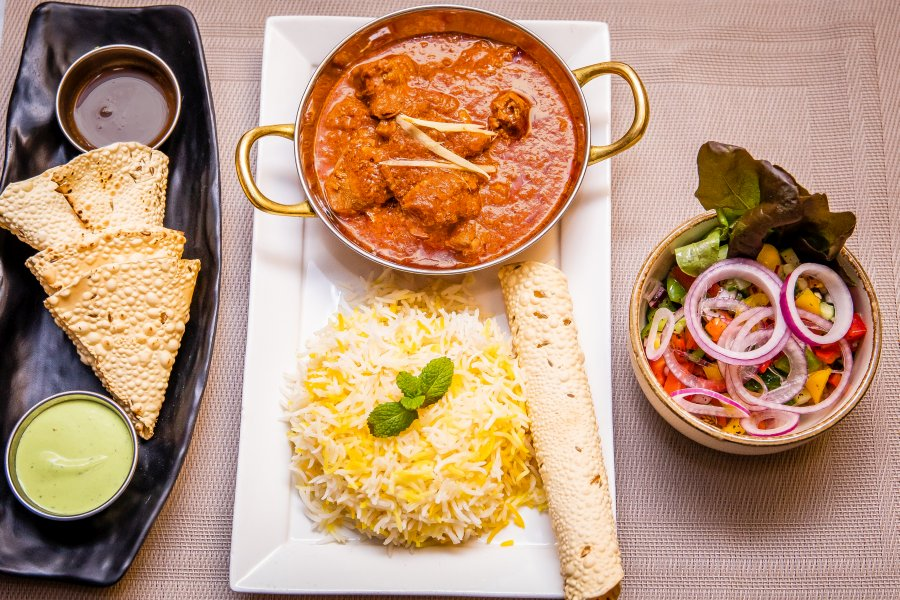
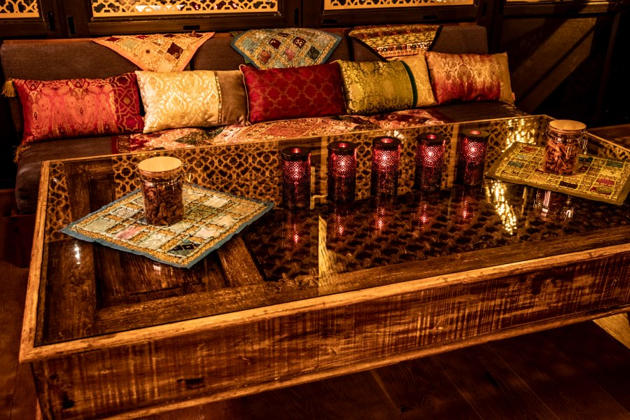
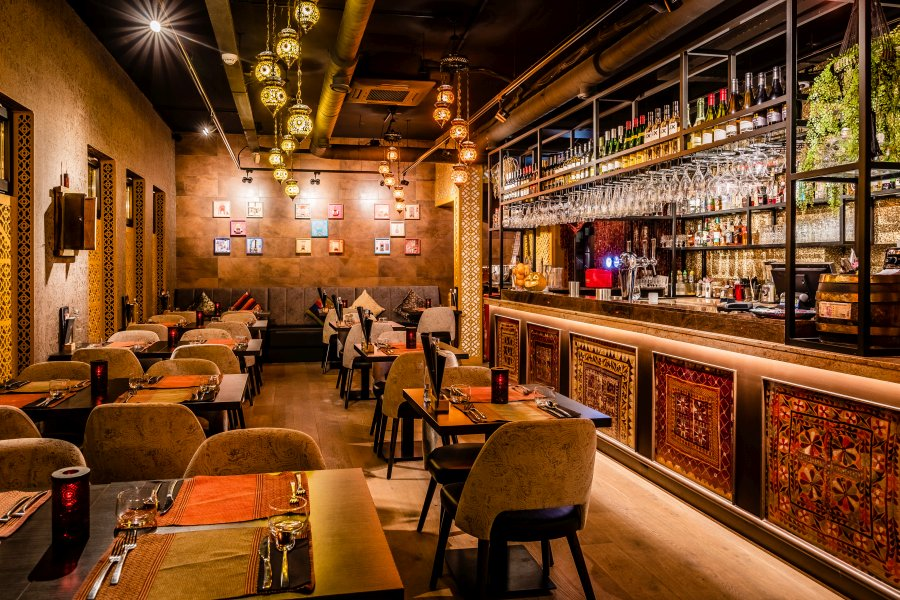
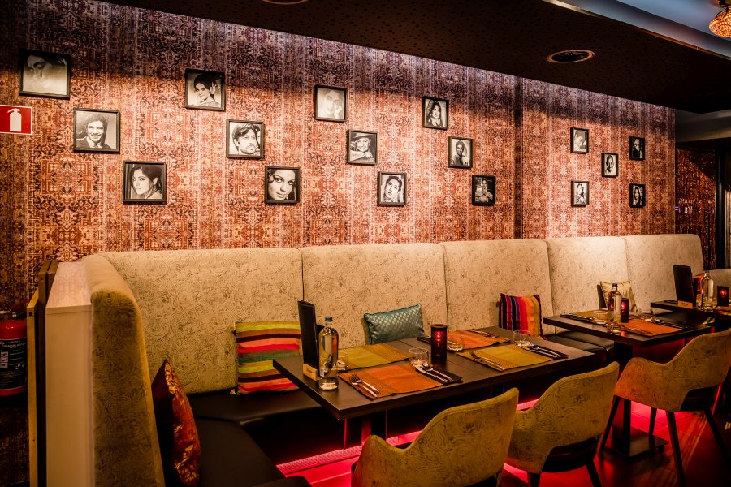
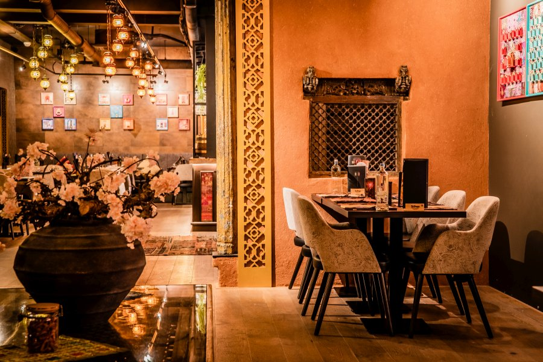
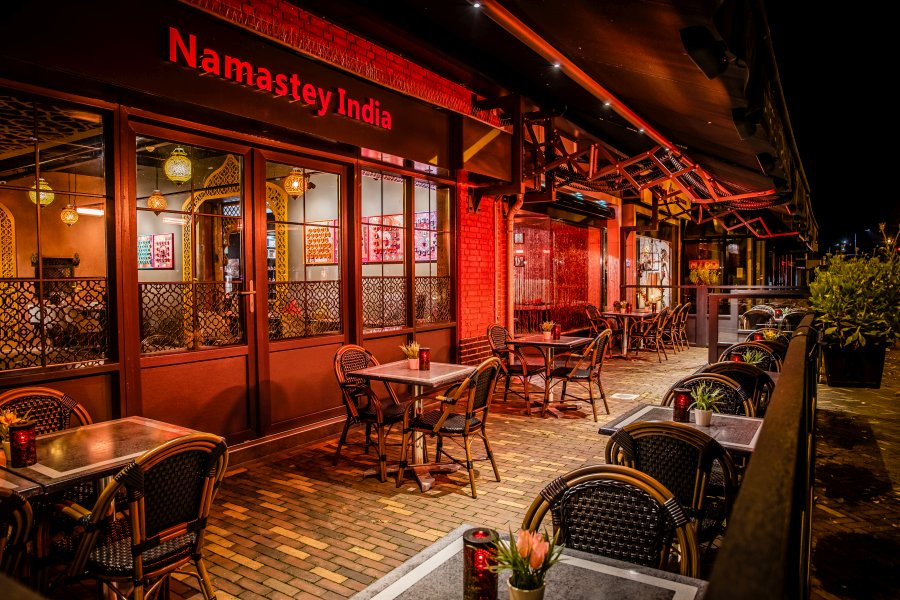
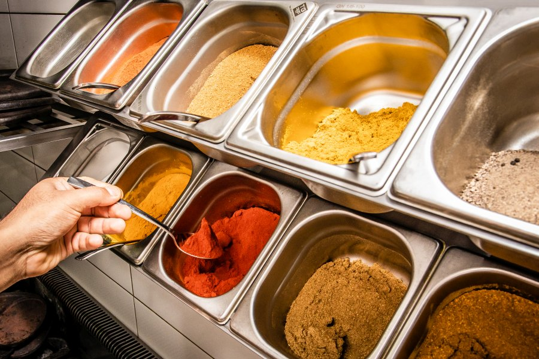

Thali
Op een platte metalen schotel komt een gevarieerde selectie van authentieke gerechten ter tafel. De uitgelezen kans om de rijke en kruidige smaken van India te proeven.
Thali’s op de kaartIndiaas restaurant in Veenendaal
Wij nemen u mee op een bijzondere eetreis door India. Onze koks uit India koken met verse ingrediënten, op traditionele en authentieke wijze.
In India groeten we elkaar door ‘Namastey’ te zeggen, met de handen tegen elkaar, de vingers naar boven en een lichte buiging met het hoofd. Het woord komt uit het Sanskriet, waar ‘nam’ buiging betekent.
In ons restaurant werken we met respect voor de Indiase eetcultuur en haar ingrediënten. De Indiase keuken is rijk aan geuren, kleuren en smaken: bij elke hap proeft u in één keer het hele smakenpalet van pittig, zuur en zoet.
Kom binnen, neem plaats in ons sfeervol ingerichte restaurant en proef de authentieke Indiase keuken.
Van tandoori-gerechten tot vegetarische curry’s: voor iedere eetwens een smakelijk gerecht, puur en authentiek dankzij onze chefs uit India.
Op een platte metalen schotel komt een gevarieerde selectie van authentieke gerechten ter tafel. De uitgelezen kans om de rijke en kruidige smaken van India te proeven.
Thali’s op de kaartDe tandoor is een oven van klei. Daarin bakken we vlees en groenten, maar ook onze broden: roti en naan.
Tandoori op de kaartEen kruidig rijstgerecht van basmatirijst, saffraanrijst en verse kruiden, met vlees, vis of groenten.
Biryani op de kaart
Op smaak gebracht met masala, een mengsel van specerijen. Van zoet en mild tot pittig; in de streek Madras zijn de curry’s zeer pittig. En er zijn volkomen vegetarische curry’s.
Curry’s op de kaartVindt u het lastig om te kiezen? Kies dan een van onze specials, vanaf twee personen. Ook ideaal voor groepen: zo maakt uw gezelschap in één keer kennis met de Indiase keuken.
28,50 p.p.
32,50 p.p.
29,50 p.p.
27,50 p.p.

In de Indiase cultuur is het gezelschap waarmee u eet net zo belangrijk als het eten zelf. Genieten doen we samen. Ons ruime restaurant is een uitstekende plek voor een familiefeest, groepsdiner of zakelijke bijeenkomst.
Kies een van de specials hierboven, laat ons een menu op maat maken, of laat uw gasten zelf kiezen van de kaart. Voor grote groepen raden we aan vooraf te reserveren.
Bogen van houtsnijwerk, warme kleuren en lantaarns: welkom in ons restaurant aan de J.G. Sandbrinkstraat.





U kunt bij ons zonder reservering terecht. Om teleurstellingen te voorkomen raden we reserveren wel aan, zeker op vrijdag, zaterdag en zondag en met meer dan vier personen.
U kunt onze gerechten online bestellen en afhalen of laten bezorgen.
Wilt u vegetarisch of veganistisch eten? Dan heeft u volop keuze. U kunt ook bij ons terecht als u lactose-intolerant bent of een glutenvrij dieet volgt: op verzoek passen we gerechten aan. Al onze gerechten zijn halal. Heeft u een allergie of intolerantie? Meld het ons, het liefst bij de ‘specifieke wensen’ van uw reservering.
Wij accepteren contant geld (euro’s), pinpas (Maestro) en natuurlijk onze eigen cadeaubonnen.
Ons restaurant kan een gezelschap tot maximaal 100 personen herbergen. Voor grote groepen raden wij aan vooraf te reserveren.
Restaurant Namastey India beschikt over een ruim terras.
Ons restaurant is toegankelijk met een rolstoel. Er is helaas geen invalidentoilet.
Uw hulphond is in ons restaurant toegestaan. Overige huisdieren helaas niet.
In de buurt is voldoende parkeergelegenheid, bijvoorbeeld:
0318 - 254 448
info@namasteyindia.nl
| Maandag | gesloten |
|---|---|
| Dinsdag | 16:00 – 22:00 |
| Woensdag | 16:00 – 22:00 |
| Donderdag | 16:00 – 22:00 |
| Vrijdag | 16:00 – 22:00 |
| Zaterdag | 16:00 – 22:00 |
| Zondag | 16:00 – 22:00 |